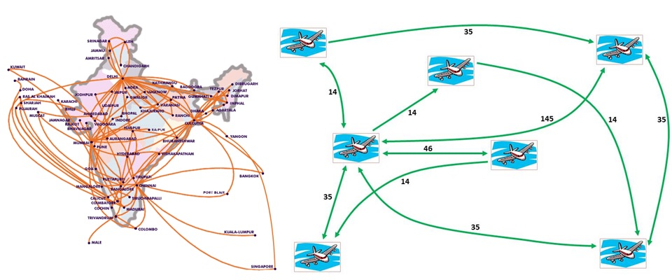

<!-- Page Content -->
<div class="container card" style="margin-top: 1em; min-height: 24em;">
  <div class="card-body">
    <h4 class="card-title">Complex Networks</h4>

    <section id="content">
      Many of the natural as well as man-made complex systems are highly organized, extensively networked, and modular in both structure and function. They could be studied with 'complex networks' paradigm with the aim of modeling and understanding their structure, function, dynamics and design. <br><br>
  
<b>Airport Network of India</b> <br>
Aviation infrastructure, with its complex web of connectivity and dynamics over it, presents an interesting case of complex system. 
We analyzed and enumerated the Airport Network of India (ANI), a representative model of Indian's aviation infrastructure system. The study led to some interesting results vis-a-vis world-wide-wide airport network and insights into the dynamic and fast-growing network that ANI is.
It would be interesting to model airport networks aimed at engineering efficient infrastructure, resilience to targeted attacks, and robust against spread of contagious diseases. The last point has especially become important in the light of recent examples of emergence of epidemics such as SARS and swine flu, the global spread of which is largely supported by the aviation infrastructure.<br><br>

 BLOG: 
 <a href="http://bagleruvach.blogspot.com/2009/06/airport-networks-design-efficiency-and.html">Airport Networks: Design, Efficiency and Emergence of Pandemic</a>  <br><br>
 
 <br><br>  

 <b>Biological Networks</b> <br>
 With the sequencing of many genomes and advances in high throughput techniques, much information about details of many biological processes as well as macromolecular structures. Graph theoretical paradigm facilitates modeling of these systems as "networks" -- i.e., systems composed of elements interacting among each other in a complex manner. <br><br>

 <a href="../research/disease.html">Diseases as Complex Networks</a>  <br><br>
  
<a href="../research/structbio.html">Protein structures as Complex Networks</a>  <br><br>

<a href="../research/brain.html">Brain Networks</a>  <br><br>

  <i><b>References:</b></i> 
  <ul>
  <li>Ganesh Bagler*, "Analysis of Airport Network of India as a Complex Weighted Network", Physica A, 387, Issue 12, 2972-2980 (2008). </li>
  <li>Ganesh Bagler*, "Complex network view of performance and risks on airport networks", Nova Science Publishers, USA, ISBN: 978-1-60692-393-1 (2009). </li>
  <li>Shikha Vashisht and Ganesh Bagler*, "An approach for the identification of targets specific to bone metastasis using cancer genes interactome and gene ontology analysis", PLoS ONE, 7(11): e49401 (2012).</li>
  <li>Vinay Randhawa and Ganesh Bagler*, "Identification of SRC as a potent drug target and its novel leads, for Asthma, using integrative approach of protein interactome analysis and in silico drug discovery", OMICS: A Journal of Integrative Biology, 16 (10), 512-526 (2012) </li>
  <li> Vinay Randhawa, Purnima Sharma, Shashi Bhushan and Ganesh  Bagler*, "Identification of key nodes of Type 2 Diabetes Mellitus protein interactome and study of their interactions with phloridzin", OMICS: A Journal of Integrative Biology, 17(6), 302-317 (2013). </li>
  <li>Ganesh Bagler and Somdatta Sinha, "Assortative mixing in protein Contact Networks and protein folding kinetics", Bioinformatics, 23, 14, 1760-1767 (2007). </li>
  <li>Ganesh Bagler* and Somdatta Sinha, "Network properties of protein Structures", Physica A, 346, 27-33 (2005).</li>
  <li> Arun Kumar, Som Dutt, Ganesh Bagler, Paramvir Singh Ahuja, Sanjay Kumar, "Engineering a thermo-stable superoxide dismutase functional at sub-zero to >50 degree celcius, which also tolerates autoclaving", Scientific Reports (Nature Publishing Group), 2, 387, 1-8 (2012).</li>
  <li>Michael Lappe, Ganesh Bagler, Ioannis Fillipis, Henning Stehr, Jose M Duarte, and Sathyapriya Rajagopal, "Designing evolvable libraries using multi-body potentials", Current Opinion in Biotechnology, (COVER-PAGE ARTICLE), 20, 437-446 (2009). </li>
  <li>Ganesh Bagler*, "Complex Network Models of Protein Structures -- Structural correlates of biophysical properties", Lambert Academic Publishing (Germany), ISBN: 978-3-8433-5860-6 (2010; BOOK).</li>
  </ul>


    </section>

  </div>
</div>
<!-- /.container -->